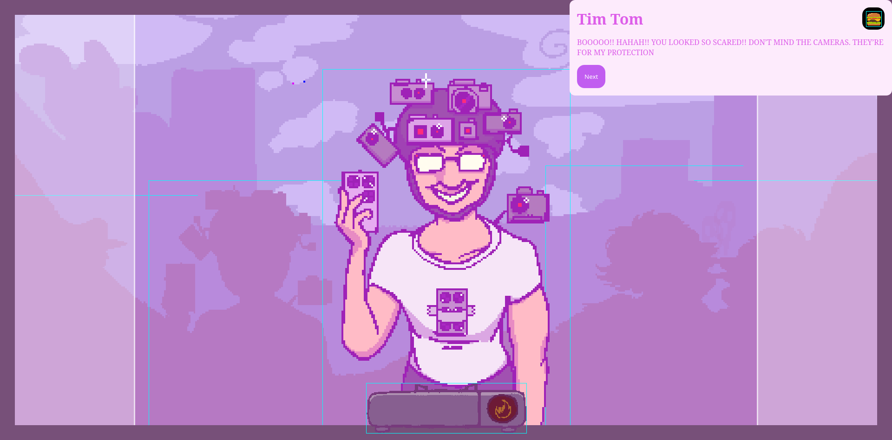
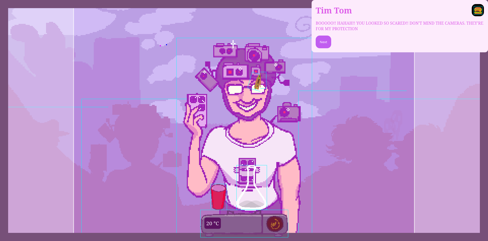

This visualization has not loaded yet
{% endmacro %} {% block head -%} {{ super() }} {% endblock %} {% block post_content -%}Curse is a silly little potion brewing game I made together with a few friends, where you buy ingredients with various twists like "needs to be heated between 50°c and 60°c" or "can only be rotated clockwise".
Curse was made without a game engine - it instead uses Lit (the web framework) to manage state and absolutely positioned img tags to render the content.

This also applies to the entities in the scene (aka any physics object)

While this worked, this was not the smartest idea considering we had limited time due to the constraints of the gamejam. This ended with the gameplay being very shallow and unbalanced.
At the center of curse is the flask. This is where you do all the brewing, and where the ingredients twist's are active.
The flask can contain the ingredients you put in, where each ingredient gets their own layer in the flask.